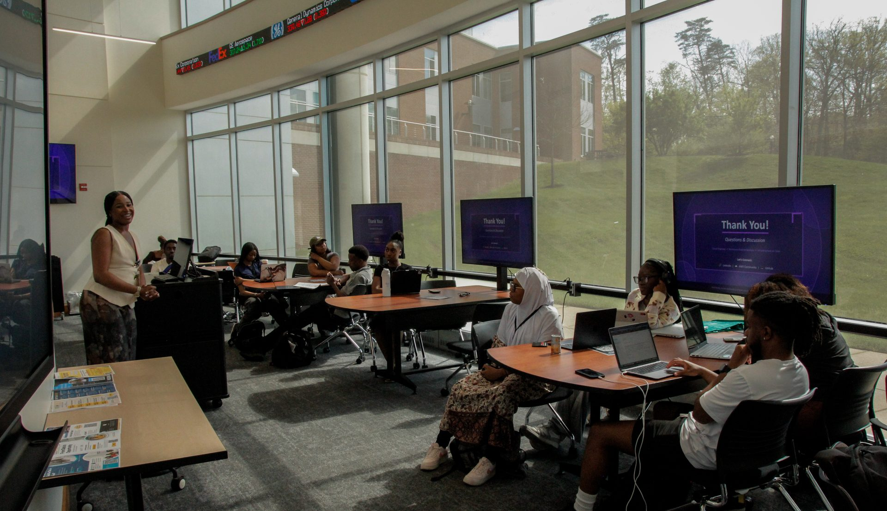

Coordinator
Ran day-to-day operations, including SPSS and Python training sessions.
The Truist Data Analytics, Research & Technology Lab was created by a $350,000 gift from Truist Bank to the College of Business at Bowie State University.

The lab gives students access to software, data sets, and training in data analytics, along with real-world projects and interdisciplinary research. Its projects cover areas including healthcare, science, economics, finance, and business.
Ran day-to-day operations, including SPSS and Python training sessions.
Organized the National HBCU Stock Market Challenge and a Georgetown University environmental-data collaboration.
Founded and advised Data Tribe, a student data community, out of the lab in 2022.
Truist Bank's gift funded the lab. The BSU announcement of the lab named Cassius Priestley, Truist Market President for the greater Washington, D.C. region, among the partners.